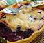

Aromatic Blueberry Pie

A simple, yet absolutely heaven worthy dessert recipe. Make one,
and the gatekeepers will love you forever.
Ingredients
- 3 cups fresh blueberries
- 1/3 cup orange juice
- 3 tablespoons white sugar
- 2/3 cup all-purpose flour
- 1/4 teaspoon baking powder
- 1 pinch salt
- 1/2 cup butter, softened
- 1/2 cup white sugar
- 1 egg
- 1/2 teaspoon vanilla extract
Steps
- Preheat the oven to 375 degrees F (190 degrees C).
- Mix blueberries, orange juice, and 3 tablespoons sugar in an
8-inch square baking dish.
- Mix flour, baking powder, and salt in a small bowl.
- Cream butter and 1/2 cup sugar in a large bowl until light and fluffy.
Beat in egg and vanilla. Gradually add flour mixture, stirring just
until ingredients are combined.
- Drop spoonfuls of batter over the blueberry mixture, covering as much
filling as possible.
- Bake in the preheated oven until topping is golden brown and
filling bubbles, 35 to 40 minutes.